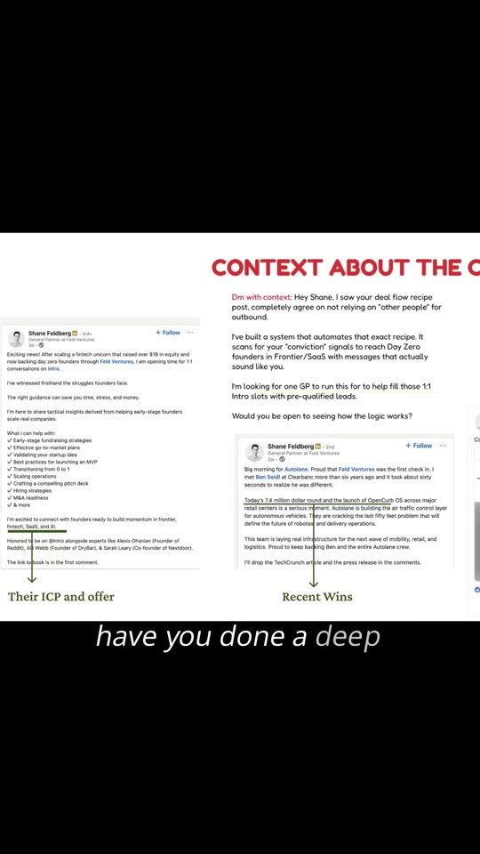
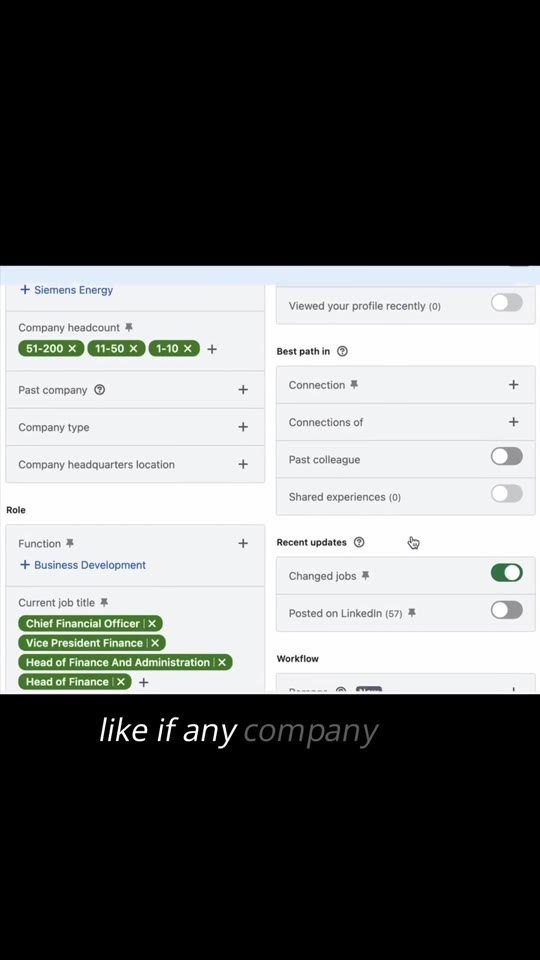
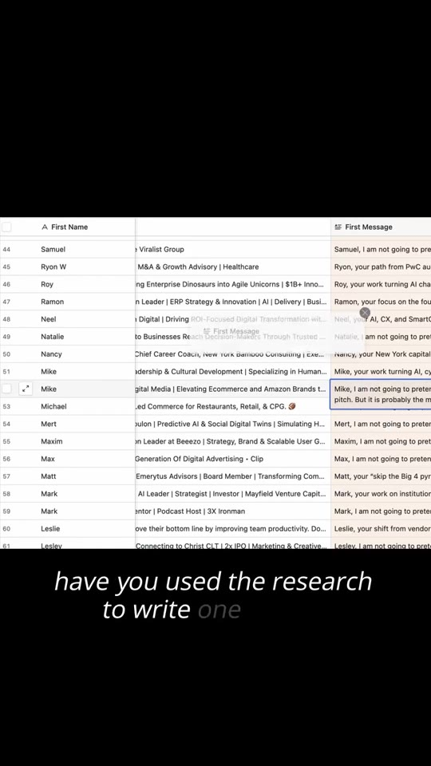

Marketing · LinkedIn-Outbound
Signal-Based B2B LinkedIn Outbound Engine
Library / Marketing / LinkedIn-Outbound
A 4-step B2B outbound methodology replacing static list-scraping with real-time intent triggers (funding rounds, leadership appointments, hiring surges) on LinkedIn Sales Navigator. The framework researches prospects past their headline to map ICP requirements and recent wins, pre-warms targets via post engagement, sends contextual non-salesy DMs, and sustains multi-touch follow-ups with case studies. The creator pitches a done-for-you lead generation service at the conclusion.

Steps
- Build Lists on Intent Triggers: In LinkedIn Sales Navigator, filter targets by dynamic change triggers rather than static titles alone. Select target headcount bands (1–10, 11–50, 51–200), department roles (e.g. Business Development / Finance), and activate the
Changed jobsandPosted on LinkedIntoggles under Recent Updates. (00:06–00:11) - Research Deep Context: Analyze prospects past their headline or bio. Review their recent post themes, interviews they gave or attended, pain points they voiced, and company milestones (e.g. funding rounds, new product launches). (00:15–00:27)
- Draft a 1-on-1 Contextual DM: Reference their exact thesis or recent post in the opening sentence. Acknowledge what they built, validate their approach, and position your system as a tool that automates their exact manual process. (00:28–00:34)
- Warm Up Before Connecting: Like and meaningfully interact with the prospect's most recent post before transmitting a connection request or direct message. (00:35–00:40)
- Multi-Touch Follow-Up Sequencing: Keep outbound conversations alive by sending engaging assets (specific case studies, revenue proof, teardown PDFs, and relevant industry memes) instead of generic follow-up reminders. (00:41–00:46)


Verbatim
| When | Where | Text |
|---|---|---|
| 00:00 | screen | Book calls for your B2B Business Using LinkedIn |
| 00:07–00:10 | screen | Company headcount: 51-200, 11-50, 1-10 Current job title: Chief Financial Officer, Vice President Finance, Head of Finance and Administration, Head of Finance Function: Business Development Recent updates: Changed jobs [ON] · Posted on LinkedIn (57) |
| 00:15–00:22 | screen | CONTEXT ABOUT THE CLIENT Dm with context: Hey Shane, I saw your deal flow recipe post, completely agree on not relying on "other people" for outbound. I've built a system that automates that exact recipe. It scans for your "conviction" signals to reach Day Zero founders in Frontier/SaaS with messages that actually sound like you. I'm looking for one GP to run this for to help fill those 1:1 Intro slots with pre-qualified leads. Would you be open to seeing how the logic works? |
| 00:28–00:34 | screen | Mike, I am not going to pretend this is not a sales pitch. But it is probably the most honest one you will see today. You built Clip because buying ads and hoping for virality fails, so you turned clipping into a repeatable distribution system where many vetted creators post short-form at scale. Most founders building creator distribution tell me partner outreach stays manual and scattered across spreadsheets, inboxes, and DMs. Not sure if that applies to you. I build systems that detect intent signals (brand launches, new creator hires, label signings, paid social ramps) and generate targeted outreach with context. |
| 00:44 | screen | Partnering for Decades. Revenue: $15,000 worth inbound lead through organic content in 90 days |
| — | caption | I’m not able to book sales calls from LinkedIn. I’ve tried everything. You haven’t tried everything. Most founders and sales teams aren't failing because LinkedIn outreach doesn't work, they're failing because they're relying on static lists and generic templates. If you aren't: → Building lists off real-time intent signals (hiring spikes, funding rounds, new leadership) → Researching prospects past their bio (analyzing recent posts, career trajectory, and engagement) → Warming up leads before touching their inbox → Running multi-touch, multi-channel sequences ...then you aren't doing outbound. You're just spamming. We built a system that runs this exact process end-to-end, delivering 15–20 pre-qualified sales calls a month without you ever having to manually log into LinkedIn. Watch the full video breakdown below to see how the engine works. |
Tools & links
- LinkedIn Sales Navigator — Lead filtering and intent tracking platform — linkedin.com/sales
- Creator profile — @do_it_shubh (Shubh / Shubham Dangi) — instagram.com/do_it_shubh
Try this
- In LinkedIn Sales Navigator, create a saved search filtered by your target roles, but turn on the
Changed jobs in the last 90 daystrigger to identify executives during their initial 90-day vendor evaluation window. - Before messaging a prospect, leave a thoughtful 2-sentence comment on their latest LinkedIn post to warm the contact before initiating outreach.
Open questions
This video post is an organic top-of-funnel agency pitch for the creator's done-for-you lead generation service ("click on the link below and let's discuss"). The tactical outreach framework and message teardown shown on screen are actionable regardless of whether you hire the agency.